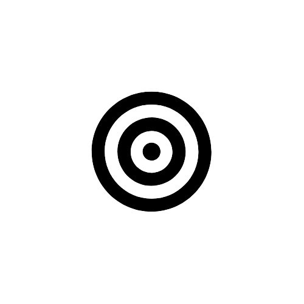
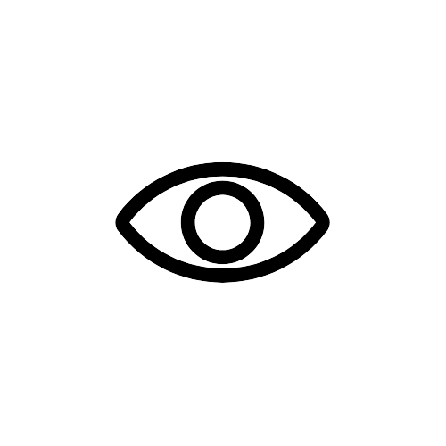

Monitoramento de hardware em totens de autoatendimento
Seja bem vindo
Conheça nossa empresa
Na IDEA7, nós trabalhamos juntos usando a tecnologia para transformar o mundo que conhecemos em algo sempre melhor.
Otimizar e melhorar a experiência de todos os usuários que interagem com o auto-atendimento.
Liderança e inovação são grandes aliados na nossa visão atual.
Missão
 Otimizar e melhorar a experiência de todos os usuários que interagem com o auto-atendimentoVisão
 Liderança e inovação são grandes aliados na nossa visão atualValores
 Mudança, transparência e inovação
Mudança, transparência e inovação

Nossos Serviços
O monitoramento de hardware em totens de autoatendimento é uma prática essencial para garantir o funcionamento eficiente e a disponibilidade contínua desses dispositivos.
O objetivo principal do monitoramento é identificar possíveis problemas de hardware antes que eles causem falhas no sistema, minimizando assim o tempo de inatividade. Isso é crucial para garantir a satisfação do usuário e a eficácia do totem de autoatendimento, que muitas vezes desempenha funções críticas, como transações financeiras, emissão de bilhetes e outras operações importantes.
Por Que aderir este monitoramento na minha rede de fast food?
- Aumento da Disponibilidade: Totens em pleno funcionamento significam menos interrupções no atendimento ao cliente. Isso pode levar a um aumento nas vendas e na satisfação do cliente.
- Redução de Custos de Manutenção Corretiva: Ao detectar problemas de hardware antes que eles causem falhas, o monitoramento permite a realização de manutenções preventivas, reduzindo a necessidade de intervenções corretivas mais caras.
- Prolongamento da Vida Útil dos Equipamentos: A identificação precoce de problemas e a manutenção preventiva podem contribuir para prolongar a vida útil dos totens, adiando os custos associados à substituição de hardware.
Entre em contato com o nosso time
Para obter informações sobre orçamentos ou entrar em contato com nossa equipe, basta enviar uma mensagem para nós. Estamos disponíveis para esclarecer dúvidas e fornecer as informações necessárias de forma rápida e eficiente.
Entrar em contato

Obteve algum problema
ou precisa de ajuda?
Contamos com uma equipe dedicada pronta para atender às suas necessidades e oferecer suporte personalizado. Entre em contato conosco para discutir detalhes e solicitar orçamentos, estamos à disposição para ajudar.
Preciso de suporte